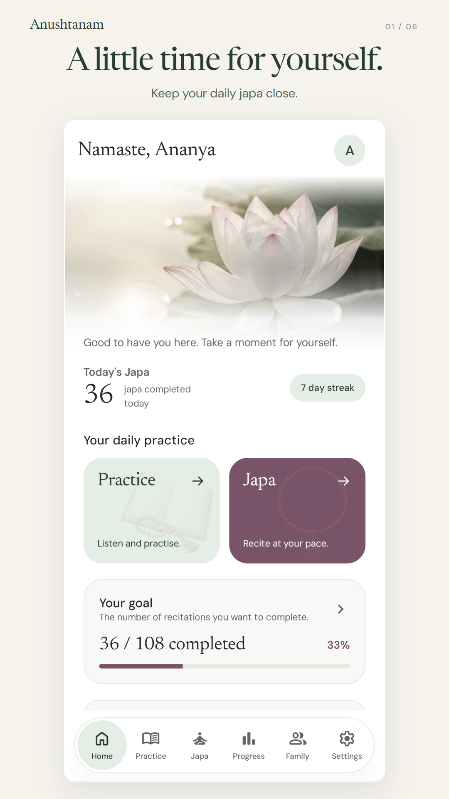
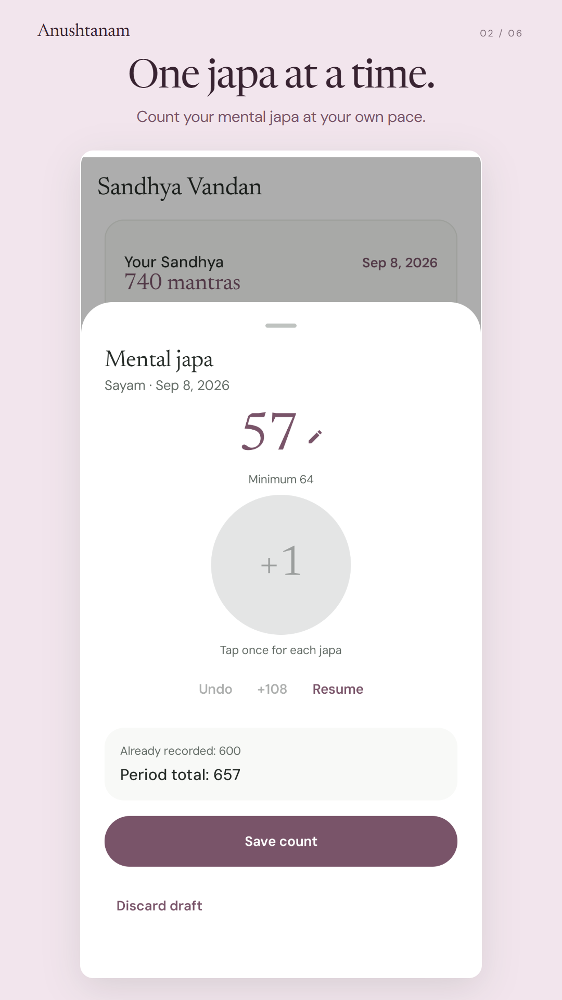
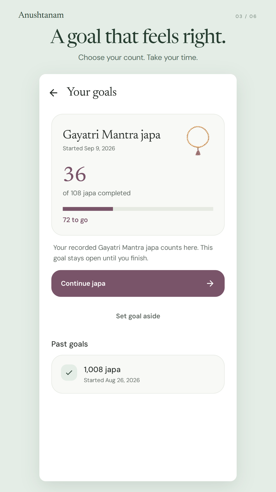
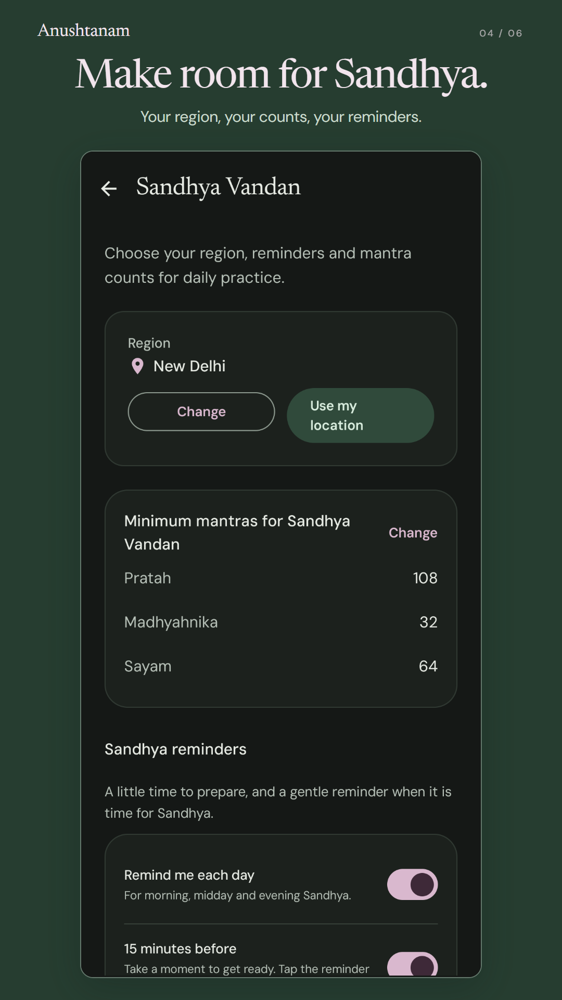
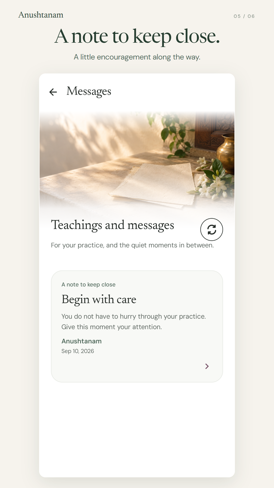
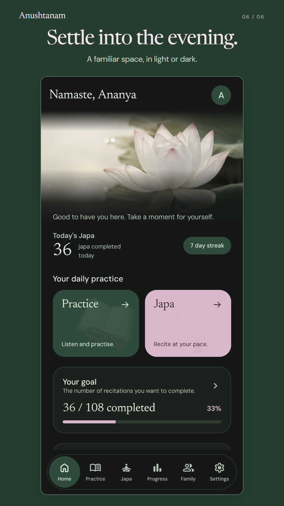

Anushtanam · Play Store branding pack






Six panels using saved app captures with demonstration data. See README.md for source details.
Listing copy and image descriptions are in listing-copy.md. No video assets.